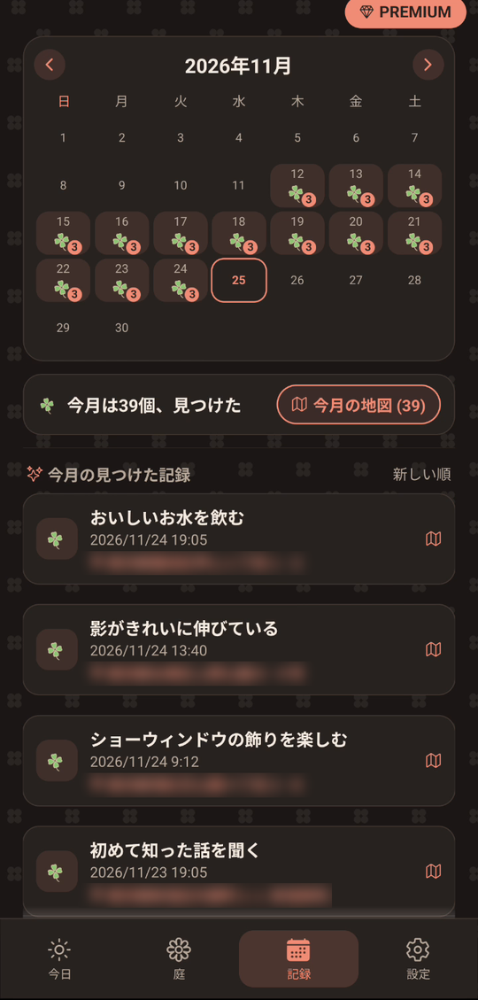
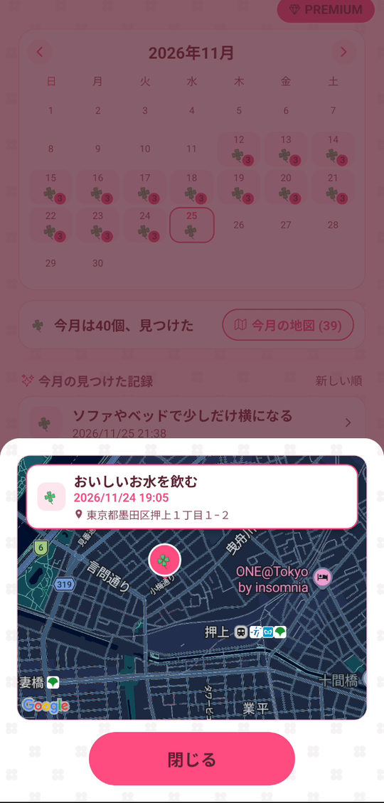

📖 はじめに（この画面でできること）
「記録」タブでは、これまでに見つけたハッピーをふり返れます。月カレンダーには、その日に見つけた個数がクローバーのスタンプで表示され、「今月は◯個、見つけた」の合計も分かります。前月・翌月への移動もできます。
🛠️ 詳しい操作手順
STEP 1
月カレンダーで眺める
「記録」タブを開くと、その月のカレンダーが表示されます。ハッピーを見つけた日にはクローバーのスタンプが付き、見つけた個数も分かります。カレンダーの上の矢印で、前月・翌月に移動できます。

月カレンダーと、その月の記録一覧
STEP 2
日ごとの記録を見る
カレンダーの日をタップすると、その日の記録を時刻順に確認できます。各記録には、見つけた時刻・その日の予定・条件の内容が表示されます。「見つけた場所を残す」をオンにしていた記録は、場所（住所）も一緒に表示されます。
STEP 3
今月のタイムラインで見返す
「記録」タブの下部「今月の見つけた記録」では、その月の全記録を新しい順に一覧できます。小さな記録も、ふり返ると宝物のように感じられます。記録がない月は「この月はまだ記録がありません」と表示されます。
STEP 4
今月の地図で場所を見返す
「見つけた場所を残す」をオンにして記録した月は、「今月の地図」（◯ヶ所）から、その月に場所を残した記録を地図のピンで見られます。カードやピンを押すと、その場所へ移動して記録の内容を確認できます。
- 対象は、場所を残した記録だけです（場所を残していない記録は地図に出ません）。
- 場所の設定は「見つけた場所を残す」をご覧ください。

今月の地図。ピンを押すと、その場所の記録が見られます